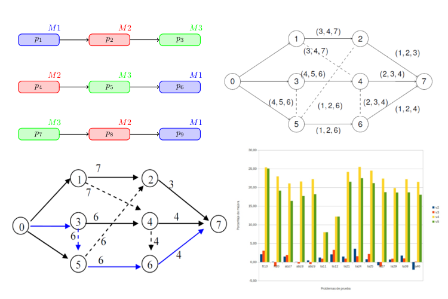

Alberto Polidura
Projects
Bellow there is a selection of the projects I have been working on during free time or college. Note that here are not included those related to my previous jobs for obvious reasons.

Bachelor Thesis
Scatter Search and Path Relinking based metaheuristics to solve the Fuzzy Job Shop Scheduling Problem

Master Thesis
Implementation of the Probabilistic Traveling Salesman Problem in HeuristicLab framework